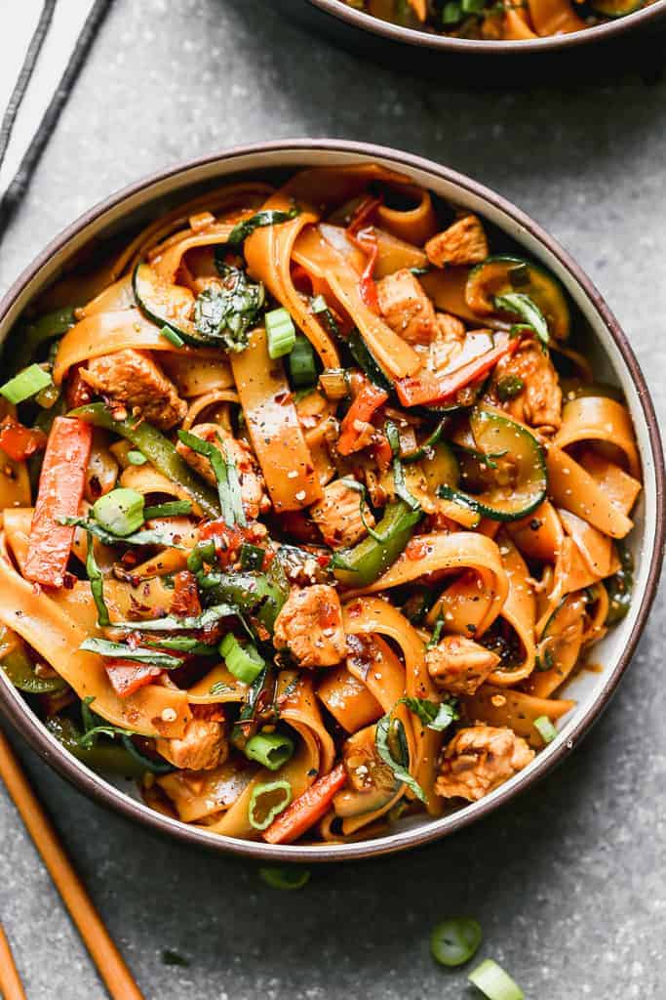

Drunken Noodles

Description:
Drunken Noodles is the literal translation of Pad Kee Mao because the theory is that these spicy Thai noodles should be eaten with an ice cold beer and that they are a great cure for hangover.
This Thai noodle dish is a very popular both in Thailand and in Thai restaurants outside of Thailand. You will be surprised how fast and easy this recipe is to make!
Ingrediets:
- 7 oz /200g dried rice noodles
- 2 tbsp oil
- 3 large cloves of garlic
- 2 birds eye chilli or Thai chillies
- 1/2 onion
- 200 g /7oz chicken thighs
- 2 tsp fish sauce
- 2 green onions
- 1 cup Thai or Thai Holy Basil leaves
- 3 tbsp oyster sauce
- 1 1/2 tbsp light soy sauce
- 1 1/2 tbsp dark soy sauce
- 2 tsp sugar
- 1 tbsp water
Steps:
- Prepare noodles per packet directions.
- Mix Sauce in a small bowl.
- Heat oil in wok or large heavy based skillet over high heat.
- Add garlic and chilli and cook for 10 seconds. Don't inhale - the chilli will make you cough!
- Add onion, cook for 1 minute.
- Add chicken and fish sauce, and fry until cooked, around 2 minutes.
- Add green onion, noodles and sauce and cook for 1 minute until the sauce reduces and coats the noodles.
- Remove from heat and immediately add basil, toss until just wilted, then serve immediately.